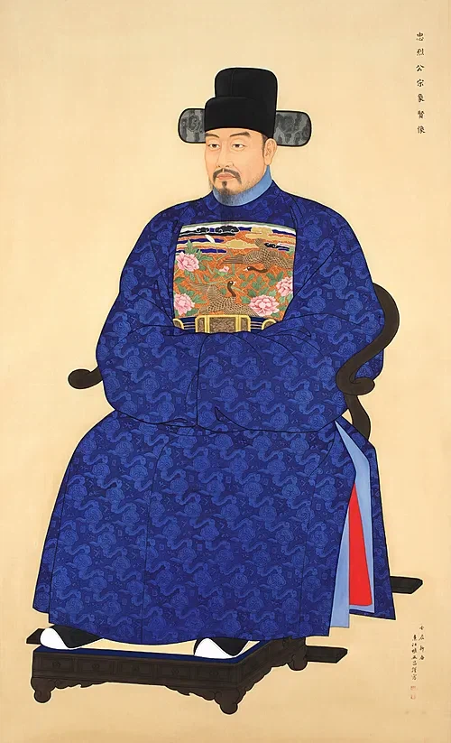
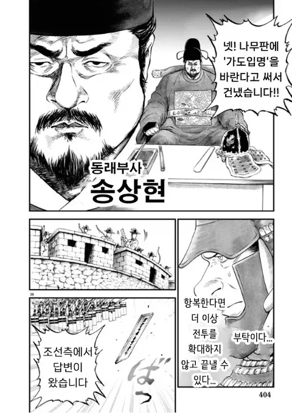
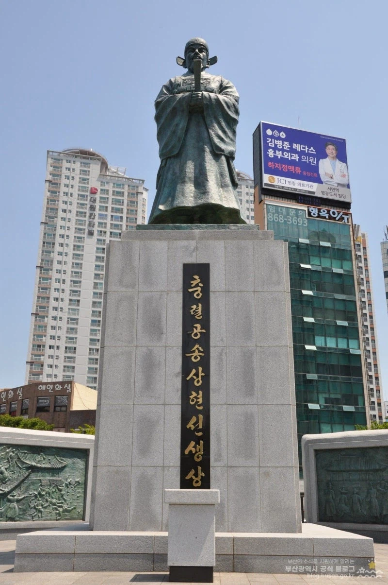

(일본 만화 일륜의 데마르카시온)
동래부사 송상현
지금으로 따지면 부산광역시장 정도의 높으신 분으로
고니시 유키나카가 항복하면 살려준다니까
송상현은 싸워죽기는 쉬우나 길을 빌려주기는 어렵다며
끝까지 싸우다 결국 동래성이 함락당함
자신과 친분이 있던 평조익이란 일본인이
송상현에게 대피를 하라고 귀띔했지만
하지만 송상현은 아버지에게 신하로써 의무를 다하겠다
편지를 보내고 끝까지 싸우다 전사함
부부는 끼리끼리 만난단 얘기가 괜히 있는 건 아닌지
부인은 지붕에 올라가 기왓장을 뜯어던지며 싸우다 전사
또 첩들 중에는 송상현이 무관복을 입고 집 밖을 나가자
월담해서 따라가서 같이 죽거나 자결한 케이스도 있다함

기합